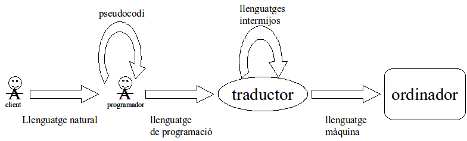

Què és un llenguatge de programació?¶
Llenguatge de programació: conjunt de símbols combinats entre si segons una sintaxis determinada que permet l’especificació d’instruccions no ambigües que formen els programes.
El pseudocodi és un llenguatge una mica més formal que el llenguatge natural però molt més informal que un llenguatge de programació. El fan servir els desenvolupadors per aclarir idees abans de posar-les en pràctica amb els detalls formals d’un llenguatge de programació.
Nota
Si una notació en pseudocodi pot ser executada per un ordinador, no és pseudocodi sinó codi sense el pseudo. Amb tot, el llenguatge escollit per aquesta primera part és tan senzill que molta gent el considera pràcticament pseudocodi! Per aquesta raó, pràcticament no farem servir pseudocodi en aquest curs.
Sovint es descriuen els algorismes en pseudocodi per després, si es consideren viables, traduir-los al llenguatge escollit.
Els traductors s’encarreguen de traduir d’un llenguatge de programació o un llenguatge intermedi a un altre llenguatge intermedi o bé a codi màquina per a ser executat finalment per l’ordinador. De traductors en tenim de diferents tipus:
Compilador: traductor de programes expressats en un llenguatge de programació a codi màquina o a un llenguatge intermedi.
La traducció es realitza sencera abans d’executar cap instrucció. Per tant, el programa ha de ser sintàcticament correcte al 100% per començar a ser executat.
Sovint cal una fase d’enllaçament (link) amb altres programes perquè el codi pugui ser executat.
En acabar, es genera un fitxer amb el codi traduït, més els enllaços corresponents, que podrà ser executat teòricament per sempre més, sense que calgui tornar a compilar.
Intèrpret: tradueix les instruccions i, sinó hi ha error, llença la seva execució d’una en una. Per tant, El programa pot començar a executar-se malgrat hi hagi algun error en instruccions posteriors.
Si es vol tornar a executar el programa, caldrà tornar a interpretar cadascuna de les instruccions que s’hagin d’executar.
Màquina virtual: es podria considerar com un cas particular d’intèrpret que tradueix d’un llenguatge intermedi al codi màquina corresponent a la plataforma on s’executa la màquina virtual.
El codi màquina és altament depenent de la màquina que l’executa. Per exemple, no podem executar el mateix codi màquina en diferents màquines (ex. el PC i el mòbil) ni en diferents sistemes operatius. L’avantatge de les màquines virtuals rau en el fet que aquestes realitzen una abstracció de la plataforma on s’executen, de manera que el programa, en codi intermedi, pugui ser compilat a una màquina i executat en una altra.